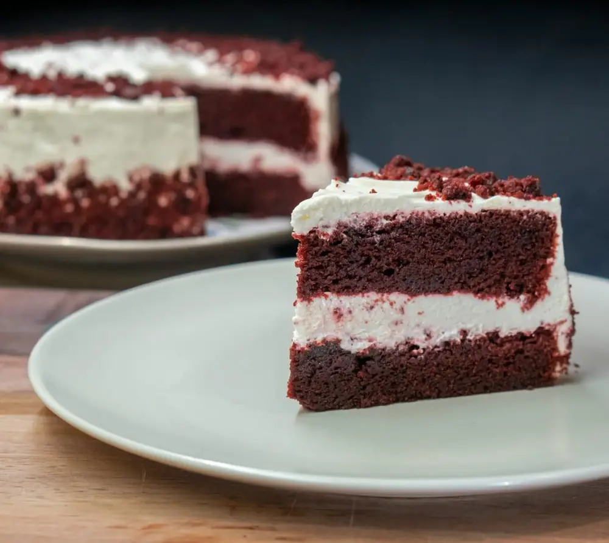
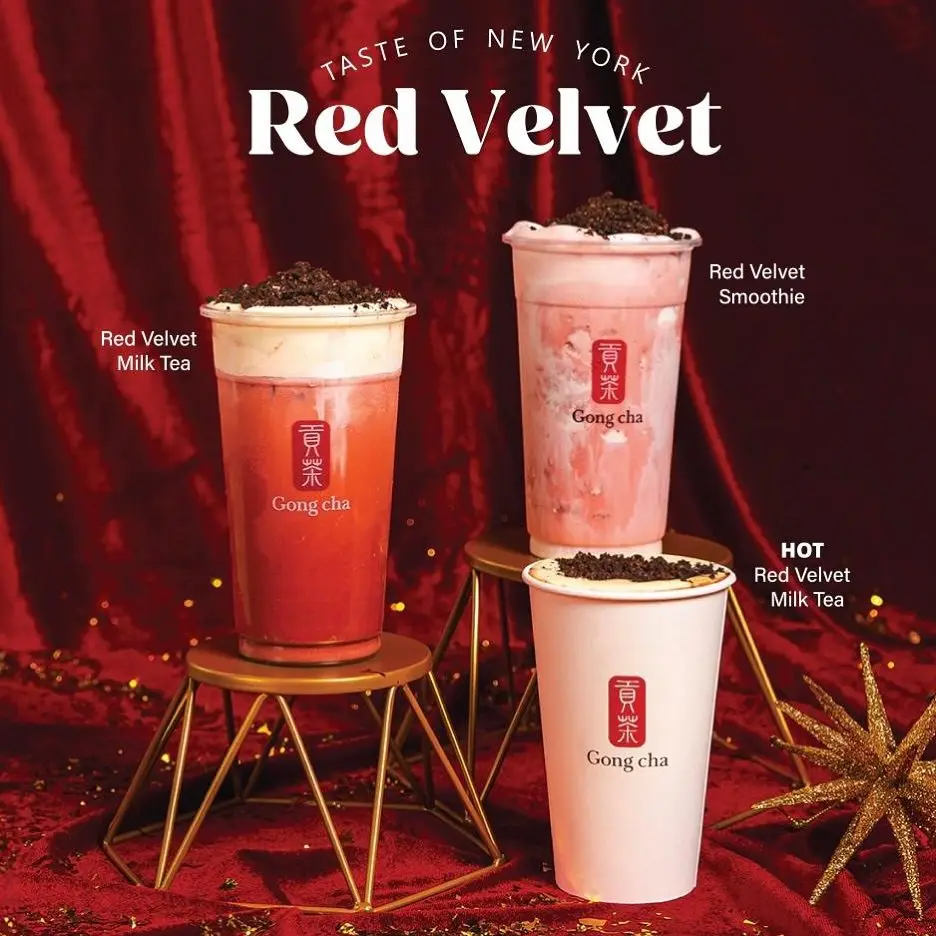
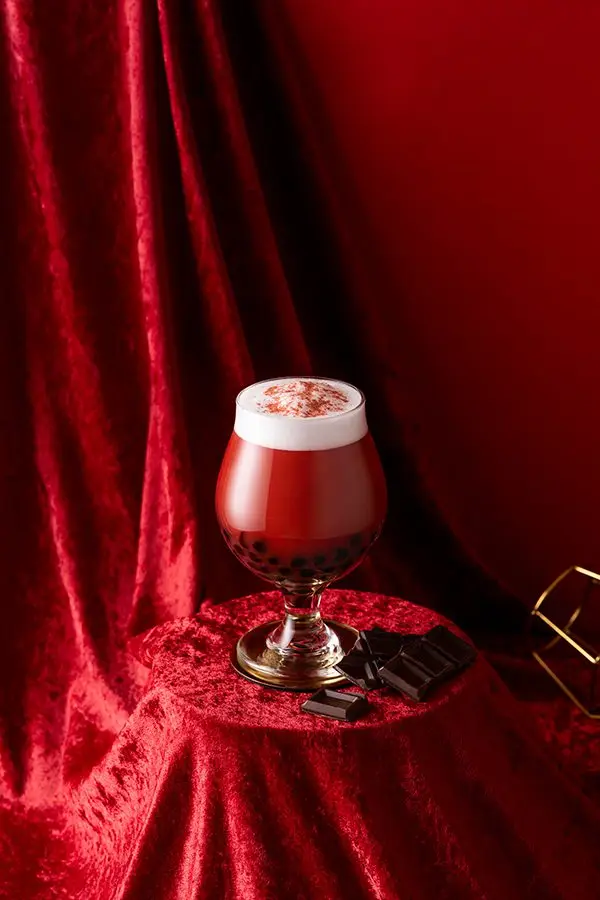

Articles / Recipes
Rich and decadent, it’s red velvet chocolate!
2025-03-11 · New products, Recipes, New products, Recipes

Want to give your bubble tea a bit of extra luxury? Red velvet chocolate is the answer! Aside from being a winter treat, it’s also the latest trend in bubble tea!

What is Red Velvet Chocolate?
As its name suggests, red velvet chocolate is a special type of chocolate flavour.
It originates from red velvet cake, a chocolate cake that uses buttermilk to prepare. When the acids from the buttermilk reacts with the cocoa powder, it gives the cake its signature red colour. As for the “velvet” part? It refers to the cake’s silky, velvety texture!
With layers of silky red velvet and creamy white frosting, the cake soon took USA by storm in the 1920s. Even nowadays, this luxurious cake is still an inspiration for desserts, drinks and more!
What about bubble tea?
When it comes to red velvet, people usually think of cocktails, lattes or hot chocolate. But what about bubble tea?
Indeed, some bubble tea shops feature this flavour in their winter specials! It’s not without reason – the rich burgundy-colour is the perfect background for some Christmas cheer, complete with snowy cream tops. Meanwhile, the sweet velvety chocolate and chewy boba work to drive away the winter blues.
For example, Gong Cha Canada had a range of themed bubble tea, including milk teas and smoothies. Other brands, such as Artea and Boba Time, have also put their own spin on this retro-chic flavour!

How do you make it?
With our range of flavoured powders, preparing a rich, velvety-smooth red chocolate is easy as pie.
Simply follow these instructions – perfect for enjoying both hot and cold!

Red Velvet Chocolate Boba
With a deep scarlet colour and a layer of silky smooth cream top, this drink captures everything that makes the cake so iconic. Pair this up with tapioca pearls for an extra chew, while the brown sugar mingles with the chocolate for a layered taste sensation!
What you’ll need
How to make
Mix 100g of the flavoured powder with 200ml hot water in a shaker. Add 200g ice cubes and shake.
Add 25g cream top powder with 100ml hot water to blender. Blend until smooth, then set aside.
Add cooked tapioca pearls to cup/glass, then add the chocolate mixture. FInally top up with the cream top. Enjoy!
Want something fancier? Dust some cocoa powder on top, or add a layer of crunchy chocolate crumbs! To enjoy this as a winter treat, simply replace the ice cubes with more hot water, and add a dash of cinnamon if you prefer.
Give it a try!
Ready to add some dazzle to your bubble tea menu? Drop us a message to try this out!